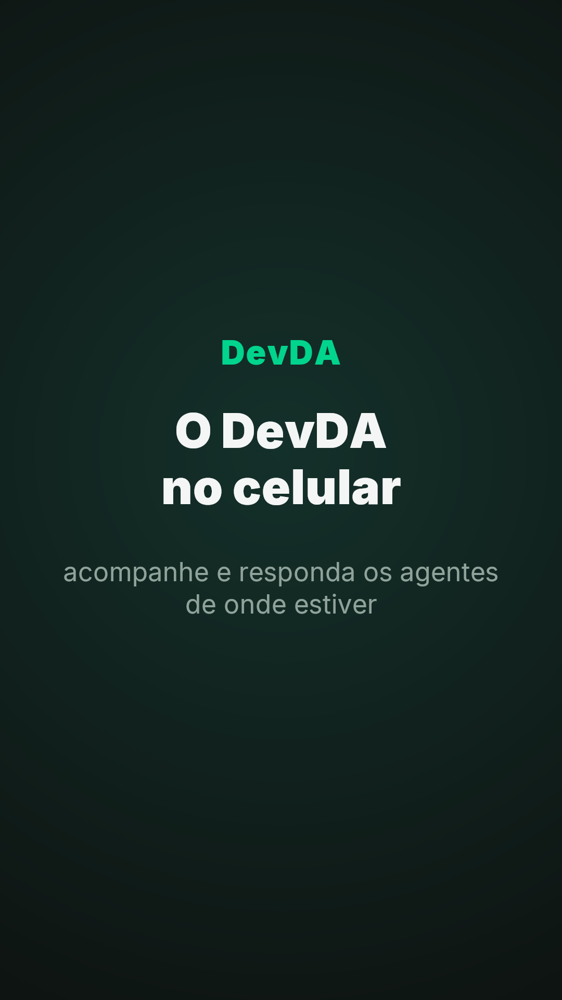
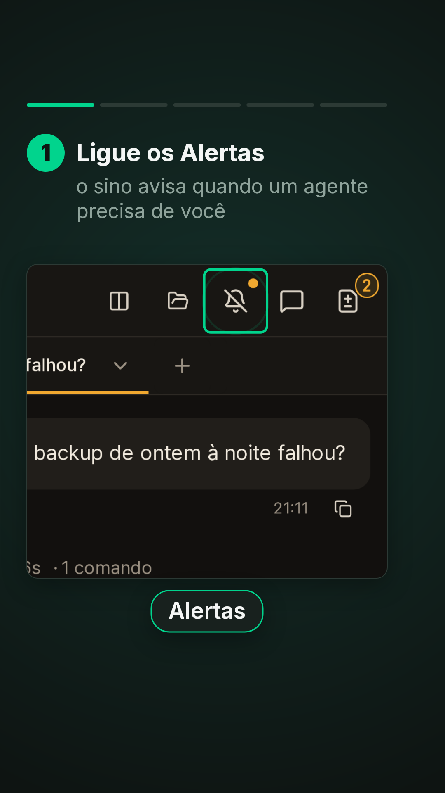
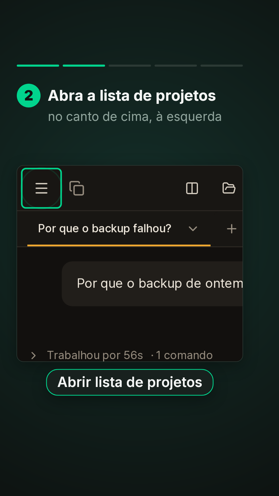
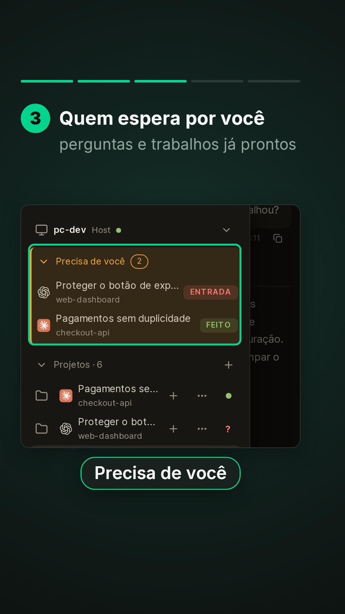
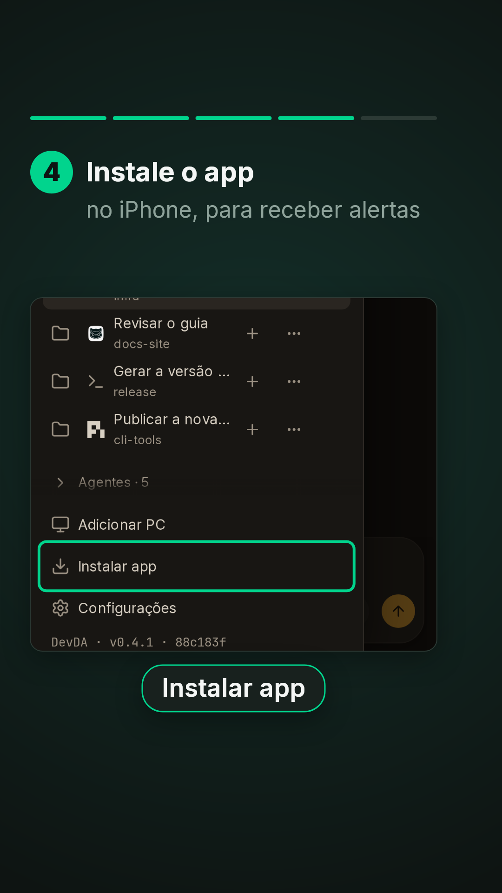
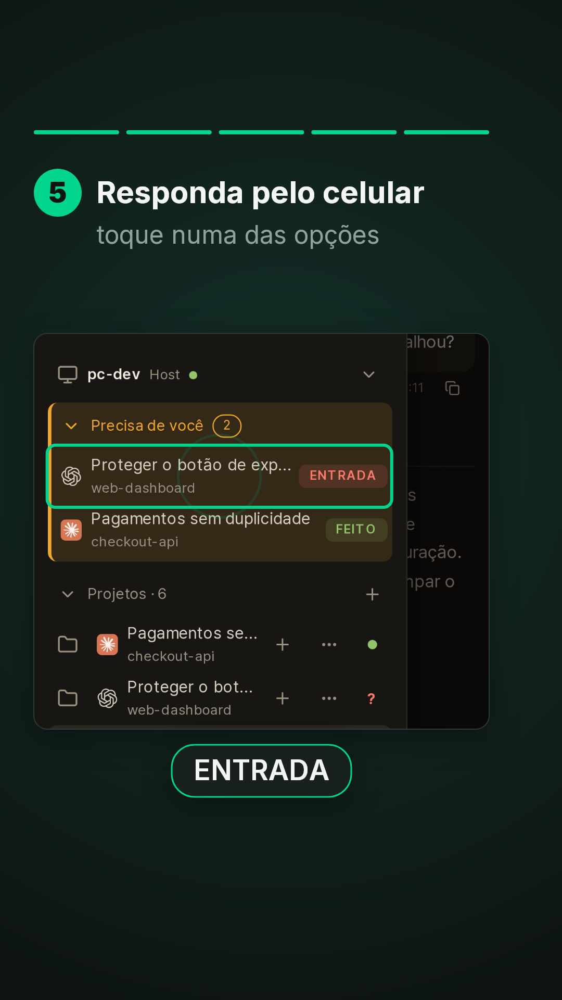
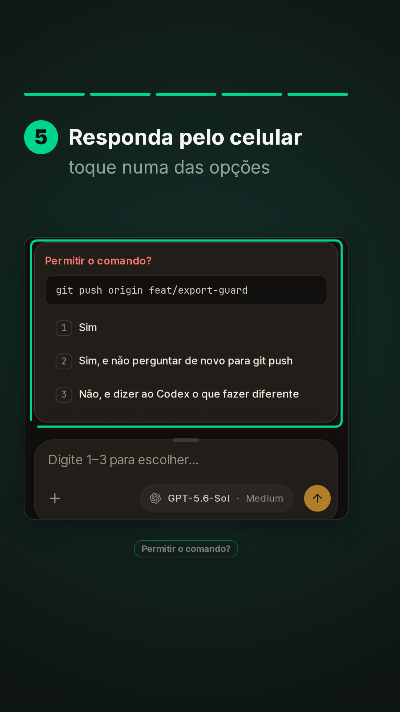
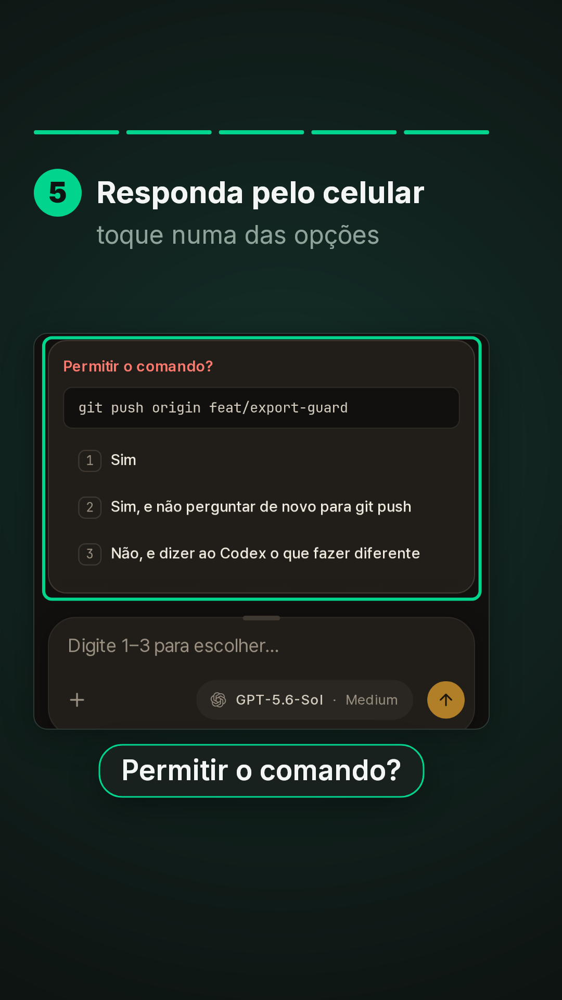
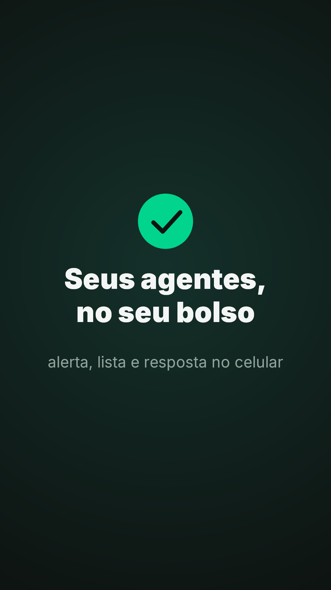

# DevDA no celular (série "Veja em ação" do DevDA, vídeo 6) - **Formato:** 9:16 (1080x1920), **42 s**, sem áudio, paleta Data Agile. Material de treinamento. - **Para que serve:** no celular, o sino de Alertas avisa quando um agente precisa de você, o menu abre a lista de projetos com o bloco "Precisa de você", "Instalar app" põe o DevDA na tela inicial (no iPhone, os alertas com o app fechado só chegam por ele) e a pergunta do agente se responde com um toque. - **Material:** prints da **sessão de demonstração** com textos fictícios em pt-BR (`_captura/prep-ptbr.py`). Celular 390x844 @3x. Captura: `_captura/shoot-celular.ts`, que desliga os Alertas antes do primeiro print para o vídeo mostrar o toque que liga. No celular não há cursor: o toque aparece como um círculo. - **Rótulos exatos** (`i18n.pt.ts`): "Alertas" (o sino; ao tocar: "Alertas ativados no app. Toque para desativar"), "Abrir lista de projetos" (o botão ☰), "Precisa de você", "ENTRADA", "Instalar app", "Permitir o comando?". - **Instalar app:** a legenda diz "no iPhone, para receber alertas" porque, no iPhone, os alertas com o app fechado só chegam pelo app da tela inicial (`i18n.pt.ts`); no Android e no computador basta o https. - **Fora do vídeo:** a troca Chat/Terminal. Na demo o Terminal mostra um aviso em inglês, que não serve de material. ## Gramática de movimento Igual aos vídeos 1 a 5. Barra de 5 passos. ## Tabela | tempo | passo | câmera | objetos e motion | legenda (título / apoio · rótulo) | |---|---|---|---|---| | 0–4,4 | Capa | — | — | **O DevDA / no celular** / acompanhe e responda os agentes de onde estiver | | 4,4–11,0 | 1 | topo, zoom no sino (5,6) | contorno no sino riscado; toque (9,0); o sino liga | Ligue os Alertas / o sino avisa quando um agente precisa de você · "Alertas" | | 11,0–16,6 | 2 | canto esquerdo do topo (11,2), lista (14,6) | contorno no ☰; toque (14,2); a lista abre | Abra a lista de projetos / no canto de cima, à esquerda · "Abrir lista de projetos" | | 16,6–22,6 | 3 | lista | contorno no bloco | Quem espera por você / perguntas e trabalhos já prontos · "Precisa de você" | | 22,6–28,6 | 4 | fim da lista (22,8) | contorno em Instalar app | Instale o app / no iPhone, para receber alertas · "Instalar app" | | 28,6–37,0 | 5 | lista (28,8), a pergunta (31,8) | contorno na ENTRADA; toque (31,4); a pergunta abre (31,8); contorno no cartão (32,6) | Responda pelo celular / toque numa das opções · "ENTRADA"; "Permitir o comando?" | | 37,0–42 | Fechamento | — | círculo, visto, frase | **Seus agentes, / no seu bolso** / alerta, lista e resposta no celular |